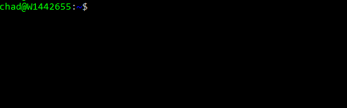

Review of Fish Unix Shell
By Chad Perkins
11.6.17
# The Install
This install was done with a bash on windows enviornment running Ubuntu.
sudo apt-add-repository ppa:fish-shell/release-2
sudo apt-get update
sudo apt-get install fish

# Running A Command
Fish uses auto suggestion based off of previously run commands.
# Man Page Completions
Fish gives you suggestions based off comand man pages. Cool!
Fish is fun to use and can be very helpful.
To learn more visit their website at fishshell.com
To contribute checkout their github at github.com/fish-shell/fish-shell